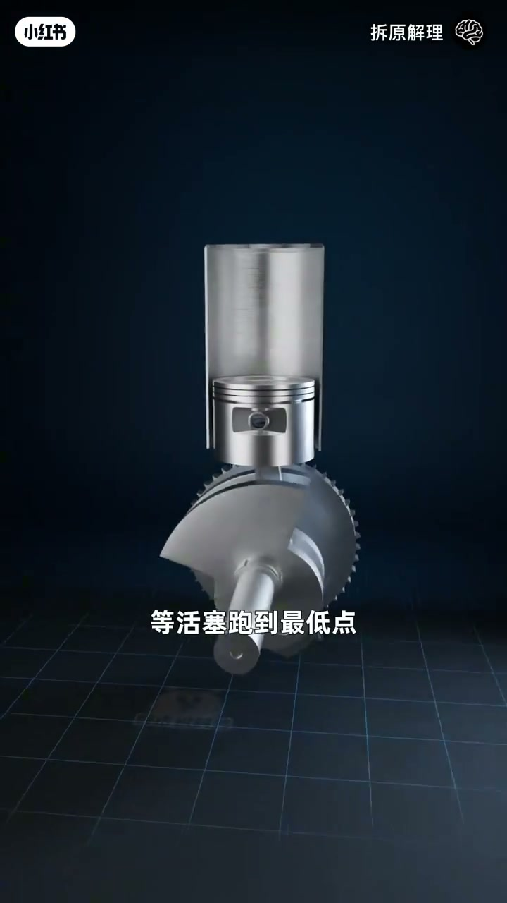
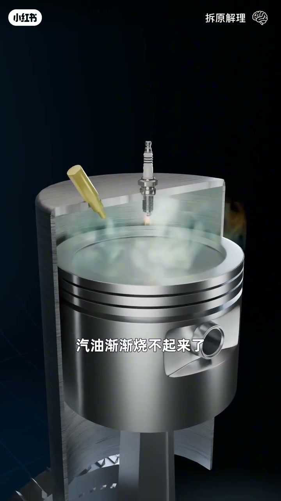
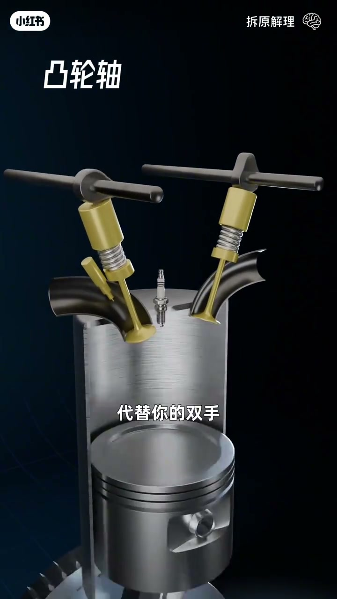
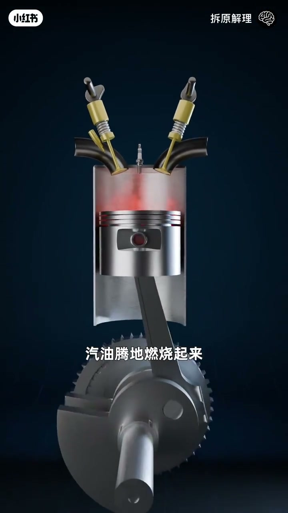
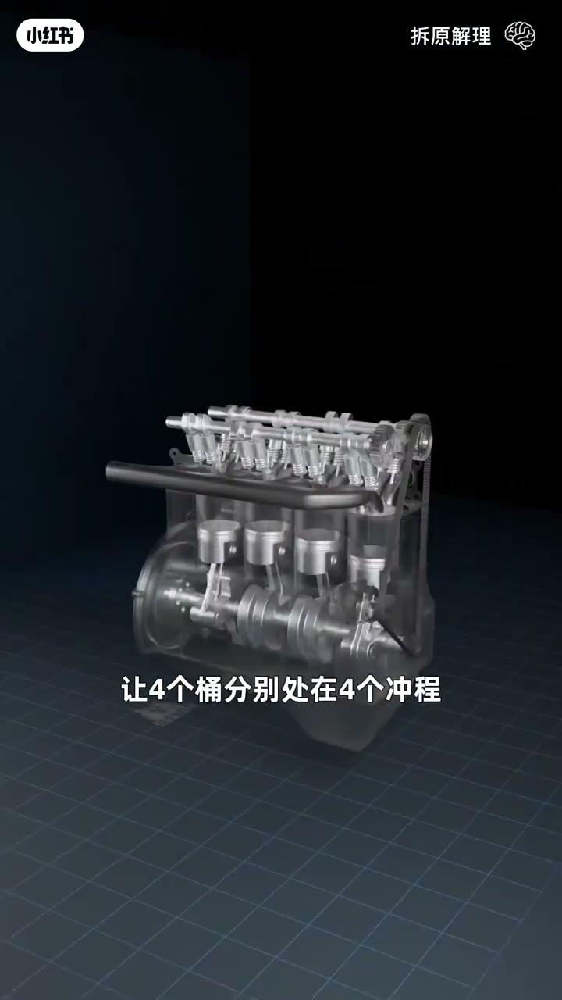

内容要点
知识结构
[00:00→00:25]
鞭炮到活塞
铁桶鞭炮炸飞盖子；倒过来加连杆曲轴飞轮，盖子变成活塞。
[00:25→00:55]
喷油点火与换气
喷嘴+火花塞替代扔鞭炮；开进排气孔并加气门盖，解决缺氧与废气。
[00:55→01:35]
凸轮与四冲程
凸轮轴代替双手开闭气门；按进气混合→压缩→点火做功→排气循环。
[01:35→01:58]
四缸平滑
单缸每循环只有一次做功显顿挫；四缸分别处在四冲程，动力持续平滑。
总结
四冲程=进气、压缩、做功、排气；多缸错峰是为了把「一次爆发」变成连续扭矩。
图文实录
从鞭炮铁桶到活塞机构
00:00 – 00:25
叙事从「往铁桶里扔鞭炮」开始：爆炸能量把盖子炸上天。把桶倒过来，盖子加连杆，再加曲轴和飞轮，盖子就变成活塞——往下跑带动飞轮旋转，到最低点后惯性把活塞顶回去。
你往铁桶里扔了一个鞭炮
让盖子变成一个活塞
[00:05] 开场隐喻：把铁桶盖子炸上了天
Opening metaphor: blew the iron-bucket lid into the sky

[00:20] 盖子变活塞：连杆+曲轴+飞轮
Lid becomes piston: rod + crankshaft + flywheel
喷油点火与进排气
00:25 – 00:55
连续扔鞭炮太累，于是开孔塞喷嘴喷汽油、加火花塞精准点火顶开活塞。但氧气变少、废气变多，汽油渐渐烧不起来——再开进气孔与排气孔，并给孔加弹簧盖（气门），需要时再按下。
汽油渐渐烧不起来了
一个让新鲜空气进来
另一个把燃烧废气排出去

[00:40] 缺氧废气堆积：汽油渐渐烧不起来了
Oxygen drops, exhaust builds: gasoline gradually won't burn
凸轮轴与四冲程循环
00:55 – 01:35
手动按气门很快手忙脚乱，于是加凸轮轴搓出两个凸轮代替双手；再用芯片控制喷油与点火时机。顺序：开进气喷油混合→关进气活塞上压压缩→最紧时点火燃烧推活塞做功→上行时开排气排出废气，再进入下一轮。
于是你加了一根凸轮轴
点燃火花塞
开始下一轮循环

[01:00] 凸轮轴代替双手，轮流打开气门
Camshaft replaces hands, opening valves in turn

[01:20] 做功冲程：汽油腾地燃烧，活塞被推下
Power stroke: gasoline flares; piston is driven down
四缸错峰：动力变平滑
01:35 – 01:58
每个循环活塞跑四次，只有燃烧那次输出动力，单缸显得顿挫。把四个铁桶用曲轴连在一起，让四个缸分别处在四个冲程，每个冲程都有一个缸做功，整体动力持续平滑，足够驱动汽车——恭喜你，发明了四冲程发动机。
让四个桶分别处在四个冲程
这样整体动力就持续而平滑
发明了四冲程发动机

[01:46] 四缸错峰：每个冲程都有一缸输出动力
Four-cylinder offset: every stroke has one cylinder making power